측량및지형공간정보산업기사 (2016-03-06 기출문제)
1과목: 응용측량
1. 터널의 갱내외 연결측량에서 측량방법이 아닌 것은?
- 정렬식에 의한 연결법
- 2개의 수직터널에 의한 연결법
- 삼각법에 의한 연결법
- 외접 다각형법에 의한 연결법
(정답률: 49%)

2. 반지름 286.45m, 교각 76°24'28"인 단곡선의 곡선길이(C.L.)는?
- 379.00m
- 380.00m
- 381.00m
- 382.00m
(정답률: 67%)
3. 400m2 정사각형 토지의 면적을 0.4m2까지 정확하게 구하기 위해 요구되는 한 변의 길이는 최대 얼마까지 정확하게 관측하여야 하는가?
- 1mm
- 5mm
- 1cm
- 5cm
(정답률: 46%)
4. 노선에 단곡선을 설치할 때, 교점 부근에 하천이 있어 그림과 같이 A', B'를 선정하여 α=36°14'20", β=42°26'40"를 얻었다면 접선길이(T.L.)는?1(단, 곡선의 반지름은 224m이다.)(오류 신고가 접수된 문제입니다. 반드시 정답과 해설을 확인하시기 바랍니다.)
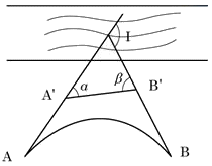
- 183.614m
- 307.615m
- 327.865m
- 559.663m
(정답률: 43%)
5. 완화곡선에 해당되는 것은?
- 복심곡선
- 반향곡선
- 배향곡선
- 3차 포물선
(정답률: 82%)
6. 터널내 수준측량을 통하여 그림과 같은 관측 결과를 얻었다. A점의 지반고가 11m이었다면 B점의 지반고는? (단위 : m)
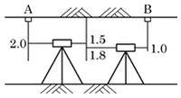
- 8.0m
- 8.7m
- 9.7m
- 12.3m
(정답률: 65%)
7. 그림과 같은 삼각형의 면적을 구하기 위하여 기준점으로부터 측량을 실시하여 좌표를 구한 결과가 표와 같다. 이 삼각형 ABC의 면적은? (단, C'는 C의 편심점으로 측선 C' C의 거리는 100m, 방위각은 180°이다.)
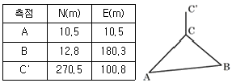
- 13480.16m2
- 13490.16m2
- 26960.31m2
- 26980.32m2
(정답률: 38%)
8. 해양지질학적 기초자료를 획득하기 위하여 음파 또는 탄성파 탐사장비를 이용하여 해저지층 또는 음향상 분포를 조사하는 작업은?
- 수로측량
- 해저지층탐사
- 해상위치측량
- 수심측량
(정답률: 67%)
9. 곡선반지름 R＝190m, 교각 I＝50°일 때 중앙종거법에 의해 원곡선을 설치하려 한다. 8등분점(M3)의 중앙종거는?
- 1.13m
- 1.82m
- 2.27m
- 2.68m
(정답률: 46%)
10. 조수의 간만 현상이 일어나는 원인에 해당하는 것은?
- 응력
- 기조력
- 부력
- 추진력
(정답률: 74%)
11. 그림과 같은 하천의 횡단면도에서 수심(H)일 때의 유량이 140m3/s, 단면적(a) 및 (b)의 평균유속이 각각 va=2.0m/s, vb=1.0m/s라면 이때의 수심(H)는? (단, 유량(Q)은 단면적(a), (b)의 유량(Qa, Qb)의 합과 같고, 하상은 수평이다.)
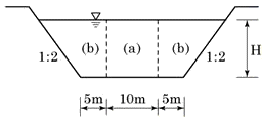
- 8.24m
- 5.64m
- 3.74m
- 1.84m
(정답률: 42%)
12. 편각법으로 반지름 312.5m인 단곡선을 설치할 경우에 중심말뚝 간격 10m에 대한 편각은?
- 54'
- 55'
- 56'
- 57'
(정답률: 65%)
13. 비행장의 입지선정을 위해 고려하여야 할 주요 요소로 가장 거리가 먼 것은?
- 주변지역의 개발형태
- 항공기 이용에 따른 접근성
- 지표면 활용상태
- 비행장 운영에 필요한 지원시설
(정답률: 73%)
14. 그림과 같이 계곡에 댐을 만들어 저수하고자 한다. 댐의 저수위를 170m로 할 때의 저수량은? (단, 바닥은 편평한 것으로 가정한다.)
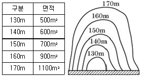
- 20600m3
- 30000m3
- 30600m3
- 35500m3
(정답률: 66%)
15. 하천측량에서 2점법으로 평균유속을 구하려고 한다. 수심을 H라 할 때 수면으로부터의 관측 위치로 옳은 것은?
- 0.2H와 0.4H
- 0.2H와 0.6H
- 0.2H와 0.8H
- 0.4H와 0.8H
(정답률: 80%)
16. 하천 측량에 있어 횡단도 작성에 필요한 측량으로 수면으로부터 하저까지의 깊이를 구하는 것은?
- 심천측량
- 유량관측
- 평면측량
- 유속측량
(정답률: 77%)
17. 터널 내 기준점측량에서 기준점을 보통 천정에 설치하는 이유로 가장 거리가 먼 것은?
- 운반이나 기타 작업에 방해가 되지 않도록 하기 위하여
- 발견하기 쉽게 하기 위하여
- 파손될 염려가 적기 때문에
- 설치가 쉽기 때문에
(정답률: 75%)
18. 노선측량의 작업단계에 해당되지 않는 것은?
- 시거측량
- 세부측량
- 용지측량
- 공사측량
(정답률: 65%)
19. 그림과 같이 삼각형 격자의 교점에 대한 절토고를 얻었을 때 절토량은? (단, 각 구간의 면적은 같고, 단위는 m이다.)
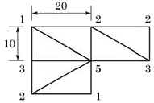
- 1352.6m3
- 862.7m3
- 1733.3m3
- 753.1m3
(정답률: 47%)
20. 유토곡선(mass curve)에 의한 토량계산의 설명으로 옳지 않은 것은?
- 곡선은 누가토량의 변화를 표시하는 것이고, 그 경사가 (-)는 깎기 구간, (+)는 쌓기 구간을 의미한다.
- 측점의 토량은 양단면평균법으로 계산할 수 있다.
- 곡선에서 경사의 부호가 바뀌는 지점은 쌓기 구간에서 깎기 구간 또는 깎기 구간에서 쌓기 구간으로 변하는 점을 의미한다.
- 토적곡선을 활용하여 토공의 평균운반거리를 계산할 수 있다.
(정답률: 76%)
2과목: 사진측량 및 원격탐사
21. 항공사진에서 발생하는 현상이 아닌 것은?
- 기복변위
- 과고감
- Image motion
- 주파수 단절
(정답률: 65%)
22. 사진의 크기가 23×23cm, 초점거리 150mm, 촬영고도가 5250m일 때 이 사진의 포괄면적은?
- 34.8km2
- 44.8km2
- 54.8km2
- 64.8km2
(정답률: 52%)
23. 다음 중 동일 촬영고도에서 한 번의 촬영으로 가장 넓은 지역을 촬영할 수 있는 카메라는?
- 초광각카메라
- 광각카메라
- 보통각카메라
- 협각사진
(정답률: 80%)
24. 정밀도화기나 정밀좌표관측기로 대공표지의 위치를 측량할 때, 촬영축척 1:20000에서 정사각형 대공표지의 최소크기는? (단, 촬영축척에 대한 상수(T)는 40000이다.)
- 0.25m
- 0.5m
- 1m
- 1.5m
(정답률: 77%)
25. 항공사진측량용 사진기로 촬영한 항공사진에 직접 표시되어 있는 정보가 아닌 것은?
- 사진지표
- 주점
- 촬영고도
- 촬영경사
(정답률: 52%)
26. 사진측량의 결과분석을 위한 현지점검에 관한 설명으로 옳지 않은 것은?
- 항공사진측량으로 제작된 지도의 정확도를 검사하기 위한 측량은 충분한 편의(偏倚)가 발생하도록 지도의 일부분에만 실시한다.
- 현지측량은 지도에 나타난 면적에 산재해 있는 충분히 많은 검사점들을 포함해야 한다.
- 현장에서 조사된 항목은 되도록 조건에 모두 만족하는 것을 원칙으로 한다.
- 그림자가 많고, 표면의 빛의 반사로 인해 영상의 명암이 제한된 지역의 경우는 편집과정에서 오차가 생기기 쉬우므로, 오차가 의심되는 지역을 조사한다.
(정답률: 77%)
27. 항공사진에 의한 지형도 작성에 필수적인 자료가 아닌 것은?
- 지상기준점 좌표
- 지적도
- 항공삼각측량 성과
- 도화 데이터
(정답률: 75%)
28. 촬영고도 1000m에서 촬영한 사진 상에 건물의 윗부분이 연직점으로부터 60mm 떨어져 나타나 있으며, 굴뚝의 변위가 6mm일 때 굴뚝의 높이는?
- 100m
- 50m
- 30m
- 10m
(정답률: 53%)
29. 상호표정에서 x축, y축, z축을 따라 회전하는 인자의 운동을 ω, φ, κ라 하고 x축, y축, z축을 따라 움직이는 직선인자의 운동을 각각 bx, by, bz라 할 때 이들 인자의 운동이 올바르게 조합된 것은?
- K1+K2=bz
- K1+K2=by
- φ1+φ2=bx
- φ1+φ2=ω
(정답률: 55%)
30. 편위수정에 대한 설명으로 옳은 것은?
- 경사와 축척의 수정
- 초점거리의 수정
- 비고의 수정
- 시차의 수정
(정답률: 66%)
31. 사진크기 23×23cm인 항공사진에서 주점기선장이 10.5cm라면 인접사진과의 종중복도는?
- 46%
- 50%
- 54%
- 60%
(정답률: 62%)
32. 항공사진의 특수 3점으로 옳게 짝지어진 것은?
- 주점, 등각점, 표정점
- 부점, 등각점, 표정점
- 부점, 연직점, 등각점
- 주점, 등각점, 연직점
(정답률: 81%)
33. 초분광(Hyperspectral) 영상에 대한 설명으로 옳은 것은?
- 영상의 밴드 폭이 1μm 이하인 영상
- 분광파장범위를 극세분화시켜 수백 개까지의 밴드를 수집할 수 있는 영상
- 영상의 공간 해상도가 1m보다 좋은 영상
- 영상의 기록 bit 수가 10bit 이상인 영상
(정답률: 59%)
34. 항공사진측량에서 항공기에 GPS(위성측위시스템) 수신기를 탑재하여 촬영할 경우에 GPS로부터 얻을 수 있는 정보는?
- 내부표정요소
- 상호표정요소
- 절대표정요소
- 외부표정요소
(정답률: 40%)
35. 원격탐사에서 디지털 값으로 표현된 화상자료를 영상으로 바꾸어 주는 화상표시장치의 구성 장비가 아닌 것은?
- Generator
- D/A 변환기
- Frame buffer
- Look up table(LUT)
(정답률: 55%)
36. 지구자원탐사 목적의 LANDSAT(1-7호) 위성에 탑재되었던 원격탐사 센서가 아닌 것은?
- LANDSAT TM(Thematic Mapper)
- LANDSAT MSS(Multi Spectral Scanner)
- LANDSAT HRV(High Resolution Visible)
- LANDSAT ETM+(Enhanced Thematic Mapper plus)
(정답률: 69%)
37. 어느 지역 영상의 화소값 분포를 알아보기 위해 아래와 같은 도수분포표를 작성하였다. 이 그림으로 추정할 수 있는 해당지역의 토지피복의 수로 적당한 것은?
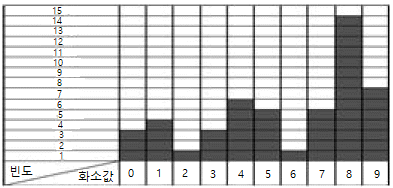
- 1
- 2
- 3
- 4
(정답률: 59%)
38. 원격탐사(Remote sensing)에 대한 설명으로 틀린 것은?
- 인공위성에 의한 원격탐사는 짧은 시간 내에 넓은 지역을 동시에 관측할 수 있다.
- 다중 파장대에 의하여 자료를 수집하므로 원하는 목적에 적합한 자료의 취득이 용이하다.
- 일반적인 원격탐사 관측 자료는 수치적으로 기록되어 판독이 자동적이며, 정성적 분석이 가능하다.
- 반복 측정은 불가능하나 좁은 지역의 정밀 측정에 적당하다.
(정답률: 78%)
39. 반사식 입체경으로 항공사진 입체모델이 정입체시가 되도록 설치하였다. 이후 반사식입체경의 정 중앙을 중심으로 90° 회전시킨 후 다시 입체모델을 관측하였을 때에 대한 설명으로 옳은 것은?
- 정입체시로 보인다.
- 편광입체시로 보인다.
- 역입체시로 보인다.
- 입체시가 되지 않는다.
(정답률: 59%)
40. 항공사진측량용 디지털카메라의 특징에 대한 설명으로 옳지 않은 것은?
- 필름으로부터 영상을 획득하기 위한 스캐닝 과정이 필요없다.
- 비행촬영계획부터 자동화된 과정을 거치므로 영상의 품질관리가 용이하다.
- 가격이 저렴하고, 자료처리에 요구되는 메모리가 줄어든다.
- 신속한 결과물의 이용이 가능하다.
(정답률: 77%)
3과목: GIS 및 GPS
41. 컴포넌트(Component) GIS의 특징에 대한 설명으로 옳지 않은 것은?
- 확장 가능한 구조이다.
- 분산 환경을 지향한다.
- 특정 운영환경에 종속되지 않는다.
- 인터넷의 www(world wide web)와 통합된 것을 의미한다.
(정답률: 62%)
42. GIS에 대한 일반적인 설명으로 틀린 것은?
- 도형자료와 속성자료를 연결하여 처리하는 정보시스템이다.
- 하드웨어, 소프트웨어, 지리자료, 인적자원의 통합적 시스템이다.
- 인공위성을 이용한 위치결정시스템이다.
- 지리자료와 공간문제의 해결을 위한 자료의 활용에 중점을 둔다.
(정답률: 70%)
43. 다음의 공간정보 파일 포맷 중 래스터(Raster) 자료가 아닌 것은?
- filename.dwg
- filename.img
- filename.tif
- filename.bmp
(정답률: 71%)
44. GIS에 대한 설명으로 옳지 않은 것은?
- 위치정보를 가진 도형정보와 문자로 된 속성정보를 갖는다.
- 컴퓨터 하드웨어(H/W)와 소프트웨어(S/W)를 필요로 한다.
- CAD에서도 GIS처럼 위상정보의 중첩기능을 제공한다.
- 일반적인 도면 형식과 지도 형식을 가진 도형정보를 다룬다.
(정답률: 84%)
45. 도형자료와 속성자료를 활용한 통합분석에서 동일한 좌표계를 갖는 각각의 레이어정보를 합쳐서 다른 형태의 레이어로 표현되는 분석기능은?
- 공간추정
- 회귀분석
- 중첩
- 내삽과 외삽
(정답률: 86%)
46. 주어진 연속지적도에서 본인 소유의 필지와 접해있는 이웃 필지의 소유주를 알고 싶을 때에 필지간의 위상관계 중에 어느 관계를 이용하는가?
- 포함성
- 일치성
- 인접성
- 연결성
(정답률: 82%)
47. GIS 하드웨어 중 기능이 다른 하나는?
- 플로터
- 키보드
- 스캐너
- 디지타이저
(정답률: 64%)
48. A수신기의 좌표값은 (100, 100, 100)이고 B수신기 좌표에서 A수신기 좌표값을 뺀 값(기선벡터)이 (10, 10, 10)일 때, B수신기의 좌표값은? (단, 좌표의 단위는 m이다.)
- (90, 90, 90)
- (100, 100, 100)
- (110, 110, 110)
- (120, 120, 120)
(정답률: 70%)
49. 한 화소에 대한 8bit를 할당하면 몇 가지를 서로 다른값을 표현할 수 있는가?
- 2
- 8
- 64
- 256
(정답률: 79%)
50. 기하학적 지리좌표정보를 담을 수 있는 영상자료의 저장방식은?
- pcx
- geotiff
- jpg
- bmp
(정답률: 79%)
51. 메타데이터(Metadata)에 대한 설명으로 옳지 않은 것은?
- 공간데이터와 관련된 일련의 정보를 제공해 준다.
- 자료의 생산, 유지, 관리에 필요한 정보를 제공해 준다.
- 대용량 공간 데이터를 구축하는데 드는 엄청난 비용과 시간을 절약해 준다.
- 공간데이터 제작자와 사용자 모두의 표준용어와 정의에 대한 동의 없이도 사용할 수 있다.
(정답률: 72%)
52. 공간통계에서 사용되는 보간(내삽)법이 아닌 것은?
- Inverse distance weighting
- Root mean square error
- Kriging
- Spline
(정답률: 52%)
53. 사용자나 응용 프로그래머가 각 개인의 입장에서 필요로 하는 데이터베이스의 논리적 구조를 정의한 것은?
- 외부 스키마
- 내부 스키마
- 개념 스키마
- 논리 스키마
(정답률: 39%)
54. 벡터 자료구조의 특징에 대한 설명으로 옳은 것은?
- 데이터 구조가 단순하다.
- 해상력이 낮게 나타난다.
- 인공위성 영상 자료와 연계가 용이하다.
- 위상관계를 나타낼 수 있다.
(정답률: 64%)
55. 동일한 위성에서 보낸 신호를 지상의 2대의 수신기에서 받아서 위치를 결정하는 GPS 자료처리 기법을 일컫는 명칭은?
- 단일차분
- 이중차분
- 삼중차분
- 사중차분
(정답률: 59%)
56. GIS 데이터베이스를 구성하는 정보(information)와 자료(data)에 대한 설명으로 옳은 것은?
- 자료는 의사 결정의 수단으로 활용할 수 있는 가공된 것이다.
- 모든 정보는 자료를 처리하여 의미있는 가치를 부여한 것이다.
- 지리자료는 지리정보를 처리하여 얻을 수 있는 결과물이다.
- 정보와 자료는 같은 의미로 사용되는 개념으로 구분이 무의미하다.
(정답률: 53%)
57. GPS의 오차와 거리가 먼 것은?
- GPS 위성의 궤도 오차
- 전리층 영향에 따른 오차
- 안테나 및 기계의 구심오차
- 날씨의 영향에 따른 오차
(정답률: 67%)
58. DEM을 통해 얻을 수 있는 정보와 거리가 먼 것은?
- 식생
- 토공량
- 유역 면적
- 사면의 방향
(정답률: 69%)
59. 공간정보를 기반으로 고객의 수요특성 및 가치를 분석하기 위한 방법으로 고객정보에 주거형태, 주변상권 등 지리적 요소를 포함시켜 고객의 거주 혹은 활동 지역에 따라 차별화된 서비스를 제공하기 위한 전략으로 금융 및 유통업 분야에서 주로 도입하여 GIS 마케팅 분석 등에 활용되고 있는 공간정보 활용의 한 분야는?
- gCRM(geographic customer relationship management)
- LBS(location based service)
- Telematics
- SDW(spatial data warehouse)
(정답률: 70%)
60. 북극이나 남극지역에서 천정방향으로 지나가는 GPS 위성이 관측되지 않는 이유로 옳은 것은?
- 지구가 자전하기 때문이다.
- 지구 자전축이 기울어져 있기 때문이다.
- 위성의 공전주기가 대략 12시간으로 24시간보다 짧기 때문이다.
- 궤도경사각이 55°이기 때문이다.
(정답률: 62%)
4과목: 측량학
61. 지성선 중 등고선과 직각으로 만나는 선이 아닌 것은?
- 최대경사선
- 경사변환선
- 계곡선
- 분수선
(정답률: 47%)
62. 1눈금이 2mm이고 감도가 30"인 레벨로서 거리 100m 지점의 표척을 읽었더니 1.633m이었다. 그런데 표척을 읽을 때 기포가 2눈금 뒤로 가 있었다면 올바른 표척의 읽음값은? (단, 표척은 연직으로 세웠음)
- 1.633m
- 1.662m
- 1.923m
- 1.544m
(정답률: 47%)
63. 100m2인 정사각형의 토지를 0.2m2까지 정확히 구하기 위하여 요구되는 1변의 길이는 최대 어느 정도까지 정확하게 관측하여야 하는가?
- 4mm
- 5mm
- 10mm
- 12mm
(정답률: 42%)
64. UTM 좌표에 관한 설명으로 옳은 것은?
- 각 구역을 경도는 8°, 위도는 6°로 나누어 투영한다.
- 축척계수는 0.9996으로 전 지역에서 일정하다.
- 북위 85°부터 남위 85°까지 투영범위를 갖는다.
- 우리나라는 51S~52S 구역에 위치하고 있다.
(정답률: 79%)
65. 그림과 같은 개방 트래버스에서 DE의 방위는?
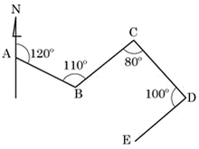
- N52°E
- S50°W
- N34°W
- S30°E
(정답률: 69%)
66. 삼변측량에 관한 설명으로 옳지 않은 것은?
- 삼변측량은 삼각측량에 비하여 관측할 거리의 크기와 필요로 하는 정밀도에 관계없이 경제적인 측량법이다.
- 변의 길이만을 관측하여 삼각망(삼변측량)을 구성할 수 있다.
- 수평각을 대신하여 삼각형의 변의 길이를 직접 관측하여 삼각점의 위치를 결정하는 측량이다.
- 관측요소가 변의 길이뿐이므로 수학적 계산으로 변으로부터 각을 구하고 이 각과 변에 의해 수평위치를 구한다.
(정답률: 69%)
67. 직접 수준측량의 오차와 거리의 관계로 옳은 것은?
- 거리에 비례한다.
- 거리에 반비례한다.
- 거리의 제곱에 반비례한다.
- 거리의 제곱근에 비례한다.
(정답률: 27%)
68. 어떤 한 각에 대한 관측값이 아래와 같을 때 이 각 관측의 평균제곱근오차(표준편차)는?
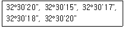
- ±2.1"
- ±2.5"
- ±3.5"
- ±4.0"
(정답률: 42%)
69. 그림과 같이 A, B, C 3개 수준점에서 직접수준측량에 의해 P점을 관측한 결과가 다음과 같을 때, P점의 최확값은?
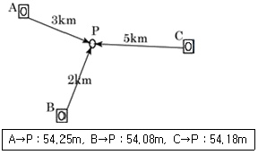
- 54.15m
- 54.14m
- 54.13m
- 54.12m
(정답률: 69%)
70. 각 측량의 오차 중 망원경을 정위, 반위로 측정하여 평균값을 취함으로써 처리할 수 없는 것은?
- 시준축과 수평축이 직교하지 않는 경우
- 수평축이 연직축에 직교하지 않는 경우
- 연직축이 정확히 연직선에 있지 않는 경우
- 회전축에 대하여 망원경의 위치가 편심되어 있는 경우
(정답률: 48%)
71. 축척 1:5000 지형도의 주곡선 간격은?
- 1m
- 2m
- 5m
- 10m
(정답률: 60%)
72. 기설치 된 삼각점을 이용하여 삼각측량을 할 경우 작업순서로 가장 적합한 것은?
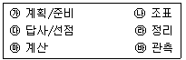
- ㉮→㉰→㉯→㉳→㉲→㉱
- ㉮→㉯→㉰→㉲→㉳→㉱
- ㉮→㉯→㉳→㉲→㉰→㉱
- ㉮→㉰→㉯→㉲→㉳→㉱
(정답률: 80%)
73. 1회 관측에서 ±3mm의 우연오차가 발생하였을 때 20회 관측시의 우연오차는?
- ±1.34mm
- ±13.4mm
- ±47.3mm
- ±134mm
(정답률: 77%)
74. 그림과 같은 트래버스에서 AL의 방위각이 19°48'26", BM의 방위각이 310°36'43", 내각의 총합이 1190°47'22"일 때 측각오차는?
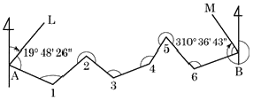
- +25"
- -55"
- +45"
- -25"
(정답률: 55%)
75. 공공측량시행자는 공공측량을 하기 며칠 전까지 공공측량 작업계획서를 작성하여 제출하여야 하는가? (문제 오류로 실제 시험에서는 모두 정답처리 되었습니다. 여기서는 1번을 누르면 정답 처리 됩니다.)
- 20일
- 30일
- 40일
- 60일
(정답률: 62%)
76. 국토교통부장관은 측량기본계획을 몇 년마다 수립하여야 하는가?
- 3년
- 5년
- 7년
- 10년
(정답률: 73%)
77. 측량기기의 성능검사 주기로 옳은 것은?
- 레벨：4년
- 트랜싯：2년
- 거리측정기：2년
- 토털 스테이션：3년
(정답률: 87%)
78. 공간정보의 구축 및 관리 등에 관한 법률에 따른 용어에 대한 설명으로 옳지 않은 것은?
- 모든 측량의 기초가 되는 공간정보를 제공하기 위하여 국토교통부장관이 실시하는 측량을 기본측량이라 한다.
- 국가, 지방자치단체, 그 밖에 대통령령으로 정하는 기관이 관계 법령에 따른 사업 등을 시행하기 위하여 기본측량을 기초로 실시하는 측량은 공공측량이라 한다.
- 공공의 이해 또는 안전과 밀접한 관련이 있는 측량은 기본측량으로 지정할 수 있다.
- 일반측량은 기본측량, 공공측량, 지적측량, 수로측량 외의 측량을 말한다.
(정답률: 63%)
79. 기본측량의 실시공고를 해당 특별시ㆍ광역시ㆍ도 또는 특별자치도의 게시판 및 인터넷 홈페이지에 게시하는 방법으로 할 경우 며칠 이상 게시하여야 하는가?
- 7일
- 15일
- 30일
- 60일
(정답률: 61%)
80. 지도도식규칙에서 사용하는 용어 중 도곽의 정의로 옳은 것은?
- 지도의 내용을 둘러싸고 있는 2중의 구획선을 말한다.
- 각종 지형공간정보를 일정한 축척에 의하여 기호나 문자로 표시한 도면을 말한다.
- 지물의 실제현상 또는 상징물을 표현하는 선 또는 기호를 말한다.
- 지도에 표기하는 지형ㆍ지물 및 지명 등을 나타내는 상징적인 기호나 문자 등의 크기, 색상 및 배열방식을 말한다.
(정답률: 67%)